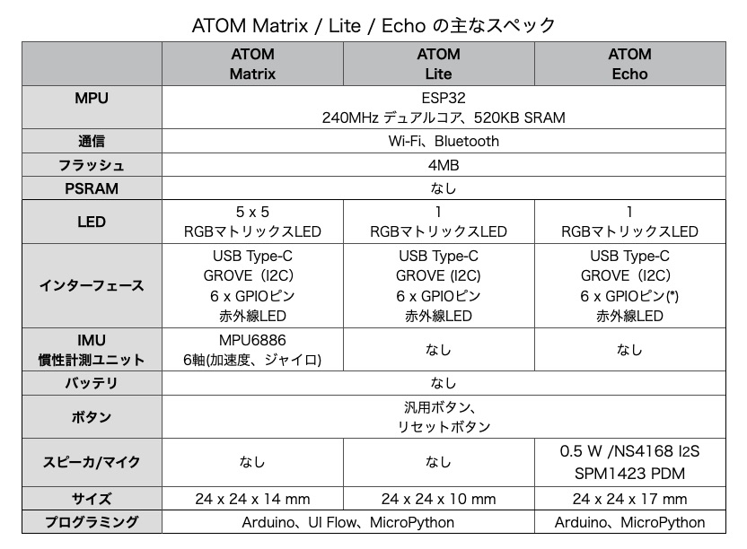
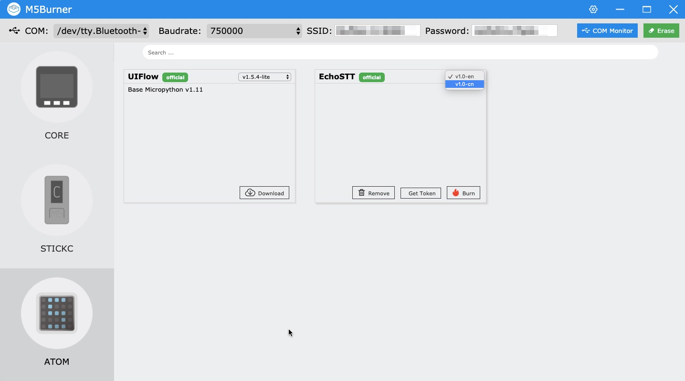

M5Stack社の製品にまつわる新情報をまとめてお届けする「M5Stackマンスリーアップデート」のコーナー、今回は号外です！
2020年6月5日、M5Stack社から新製品「ATOM Echo」が発売されました。世界同時発売とのことで、日本でもスイッチサイエンスで販売がスタートしました。
ATOM EchoはMatrix、Liteに続くATOMシリーズの3つ目のデバイスで、スピーカーとマイクが搭載されているのが最大の特徴です。ATOM EchoのスペックをMatrix、Liteと比較しました。Matrixには5 x 5 のRGB LEDがついていますが、Echoは1個のRGB LEDに変わっています。またMatrixには6軸IMU（加速度、ジャイロセンサ）がありますが、Echoにはそれがなく、その代わりにスピーカーとマイクがついています。

*: EchoのG19、G22、G23、G33はスピーカー・マイクに接続されるため、GPIOとして使うと破損することがあるとのことで、注意が必要です。
M5Stack、M5StickC、ATOM Matrix、ATOM Echoを並べてみました。ATOM Matrix、ATOM Echoの小ささがよく分かります。
ATOM Echoはプラスチックのケースに入って届きます。ATOM Matrixは白い台紙にセットされていましたが、ATOM Echoは楽しそうなプリントの台紙にセットされていて、使う前からワクワクします。

出荷時は、ATOM Echoをブルートゥーススピーカーにするファームウェアがインストールされています。 ATOM EchoをUSBケーブルにつないで、パソコンでブルートゥースデバイスを探すと、次のように「M5_SPEAKER_T1」という名前でATOM Echoが検出されます。
「接続」するとATOM Echoがブルートゥーススピーカーとして使えます。YouTubeの音楽の音を出力したところ、小さいケースなので迫力のある音ではありませんが、きれいな音が聞こえました。
ATOM Echoのスケッチ例が次のサイトに公開されています。この原稿を書いている6月8日時点ではm5atomライブラリの最新版は0.0.1ですが、このバージョンをインストールしてもArduino IDEのスケッチ例には現れないようです。
https://github.com/m5stack/M5-ProductExampleCodes/tree/master/Core/Atom/AtomEcho
公開されているスケッチ例には以下のものが含まれています。
EchoSTT（音声認識は）ATOM Echoのマイクで音声を録音し、それをBaiduの音声認識APIに渡して認識し、文字列に変換するサンプルです。
プログラムの16、17行目にWifiSSID、WifiPWDがあるので、それを自分の環境に合わせて変更します。
さらに、M5Burnerの最新版（2.0.0）をインストールし、デバイスとしてATOMを選択してファームウェアのEchoSTTの「Get Token」をクリックしてトークンを取得し、106行目の YOUR-TOKEN に書き込みます。
rest.settoken("YOUR-TOKEN");Arduino IDEのボードとしてM5StickCを選択してビルドし、ATOM Echoに書き込みます。ATOM Echoのボタンを押しながら何か話すと、それが文字列に変換されます。
プログラムの136行目にBaidu APIを呼んでいる部分があり、引数に DEV_PID_MANDARIN を渡しているので、中国語を認識して文字に変換するようです。
if (rest.Pcm2String(microphonedata0, data_offset, DEV_PID_MANDARIN, &SpakeStr) != -1)
そこで、Google翻訳で「こんにちは」を中国語の「你好」に変換してパソコンにそれを発音してもらい、それをATOM Echoで録音して、変換してみました。
シリアルモニタに次のようなメッセージが出力され、認識に成功しました！時間が5.5秒かかっています。
Init i2s_driver_install
Init i2s_set_pin
Init i2s_set_clk
end
Time 5449ms
{"corpus_no":"6835388874622027464","err_msg":"success.","err_no":0,"result":["你好。"],"sn":"415838341021591487991"}
你好。次に「私は日本人です」を中国語（我是日本人）に変換し、パソコンで発音した音を認識させたところ、次のような結果でした。
1回目：我是你奶奶（私はあなたのおばあちゃんです）
2回目：我是你的音（私はあなたの声です）
認識はなかなか難しいようです。といっても音声認識の精度や時間はBaidoの性能を反映しているわけですが。
さらに、136行目の DEV_PID_MANDARIN を DEV_PID_ENGLISH に変えて、Google翻訳に「Hello」と発音してもらい、ATOM Echoに認識させたところ、2回は認識に失敗しましたが、3回目に次のように認識に成功しました。
Time 7728ms
{"corpus_no":"6835423719643684069","err_msg":"success.","err_no":0,"result":["hello"],"sn":"180038331121591496104"}
hello「Factory_Test」というサンプルプログラムは、ビルドして動かすとファンファーレが鳴り、その後周囲の音を周波数変換（FFT）し、結果をシリアルモニタに出力します。スイッチを押したままリセットすると、ファンファーレが鳴り続けます。
「Repeater」はボタンを押している間、音を録音し、離すと再生するサンプルです。
「StreamHttpClient_Echo」は、サーバー上のMP3ファイルを再生するサンプルで、とあるサーバー上のファンファーレのMP3ファイルを再生するようですが、コンパイルエラーになり、実行できませんでした。
ATOM Echoでは、Baiduの音声認識APIを使って音声認識するもう一つのサンプルがあります。 ATOM Echoは音声を録音し、それをBaiduの音声認識APIに渡し、結果を受け取るという流れです。 さらに別のM5StackやM5StickCを使い、UI Flowで音声認識の結果を受け取ることができます。
このためには、M5Burnerでファームウェアをインストールする必要があります。 M5Burnerも新しくなっているので、M5Stackサイトのダウンロードページ で最新版（2.0.0）をダウンロードしてPCにインストールします。

M5BurnerのUIも新しくなっています。ATOMを選択すると、UI FLOWとEchoSTTというファームウェアが表示されます。 UI Flowは名前の通り、UI Flow用のファームウェア、EchoSTTは音声認識（speech to text）のファームウェアです。
M5BurnerでATOM EchoにEchoSTTを書き込みます。 M5Burner上部のSSIDとPasswordにお使いのWi-Fiルーターのものを設定し、ATOM EchoをUSBケーブルでパソコンにつないで、ポート番号（Macならデバイス名）をCOMに設定します。 EchoSTTには英語版と中国語版がありますが、中国語版（v1.0-cn）を選び、最初に「Erase」をクリックして消去してから「Burn」をクリックして書き込みます。 書き込みが終わったら「Get Token」をクリックしてトークンを取得しておきます。
ATOM EchoはBaiduからの認識結果をシリアルに出力するので、M5BurnerのCOM Monitorを立ち上げておきます。
Google翻訳で適当な言葉を中国語にして、それをパソコンで発音させました。
ATOM Echoのボタンを押して発音を録音し、ボタンを離すと音声がBaiduに送られ、結果が表示されます。
Init i2s_driver_install
Init i2s_set_pin
Init i2s_set_clk
end
Time 6160ms
{"corpus_no":"6836131087810952731","err_msg":"success.","err_no":0,"result":["黑的。"],"sn":"161096290031591660801"}
黑的。开灯（Kāi dēng、電気をつける）が黑的（Hēi de、黒）と認識されてしまいました。いろいろ試しましたが、Google翻訳で発音させた単語はうまく認識されませんでした。M5Stack社CEOのJimmyさんに开灯（電気をつける）、关灯（電気を消す）と発音してもらい、その音声ファイルを再生してATOM Echoに聞かせたところ、次のように認識できました。
Time 43822ms
{"corpus_no":"6836131688517212836","err_msg":"success.","err_no":0,"result":["开灯。"],"sn":"7165438761591660941"}
开灯。
Time 4169ms
{"corpus_no":"6836131792467209458","err_msg":"success.","err_no":0,"result":["关灯。"],"sn":"768037177181591660965"}
关灯。UI Flowの最新版（V1.5.4）には「高度なブロック」の中に「Echo STT」というブロックが用意されています。最新版はUI Flowのメニューバーの「VER」で「Beta」を選ぶと切り替えられます。Echo STTにはトークンを使って初期化するブロック、Echoのデータを受信するなどのブロックがあります。これらを使うと、次のようにATOM Echoで音声を録音、認識し、その結果を別のM5StackやM5StickCで受信して、認識した単語によって制御するようなプログラムが作れます。
Jimmyさんの声を使い、ATOM Echoで録音して音声認識し、その結果をM5StickCで受信してLEDを制御してみたのが次の動画です。
M5StickCを使ったときに「スピーカーが内蔵されてたら便利だな」と感じていてものがATOMシリーズで実現されました。 これだけ小さくて、音が扱えるデバイスはおもちゃの制御やIoT端末としての可能性を感じます。皆さんのアイデアを実現するときの強力な部品になりそうです。